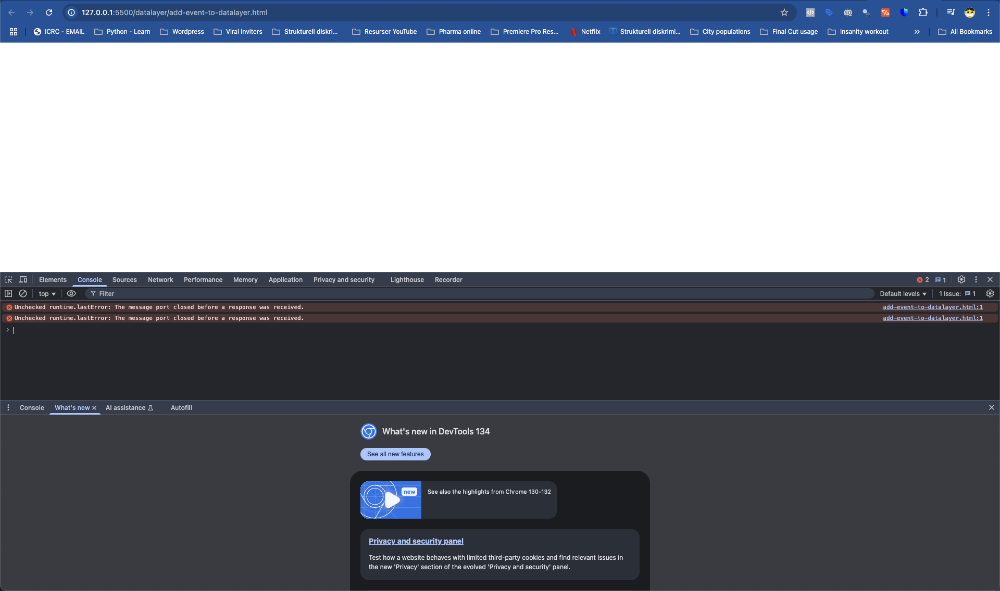
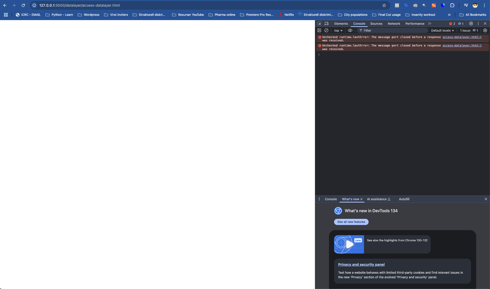
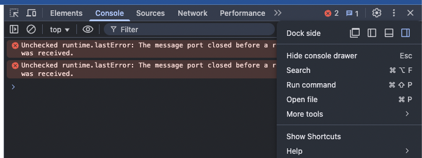
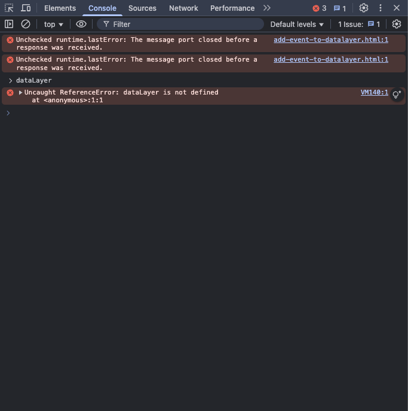
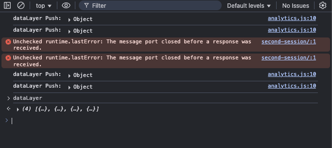
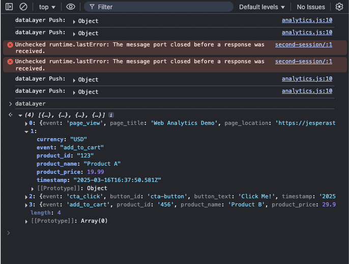

As mentioned, the dataLayer exist in your browser. This means that every website that you visit that makes use of the dataLayer stores information, temporarily, in your browser.
How to access the dataLayer
The easiest way to see what a website stores in the dataLayer is to use Chrome browser.
Chrome has a feature called Developer Tools. You can find them by:
- Open a Chrome browser
- In the top navigation - click View
- In the bottom of the menu you should have Developer - hover that option
- Select JavaScript Console
- Your window will split and you will see a panel
If you have never done this before it likely opens in the bottom of the screen
I have mine on the right side
You can change the location of the console window by clicking those three little vertical dots in the Developer Tools window.
Show contents of dataLayer
If there has been some code that push events to the dataLayer you will be able to see these events by:
- Make sure that Console is the selected tab
- Other tabs are Elements, Network, Sources, Performance, Memory, Applications etc.
- Click in the window of the Console
- Now type "dataLayer" (without the "")
- Press enter
- If any events exist on the page they should show up
dataLayer does not exist
If the dataLayer doesn't exist or if there are no events pushed to the dataLayer it will look something like this once you've hit enter.
dataLayer exist
If the dataLayer exist and some events have been pushed to it. It will look like this when you press enter:
In order to see the events in the dataLayer you have to click the little object that just appeared beneath your dataLayer-keyword.
You should now see an expanded view with all the events that have currently been pushed to the dataLayer. If you want to see all the parameters/characteristics/key value pairs associated with a single event - you simply click it.
What to read next